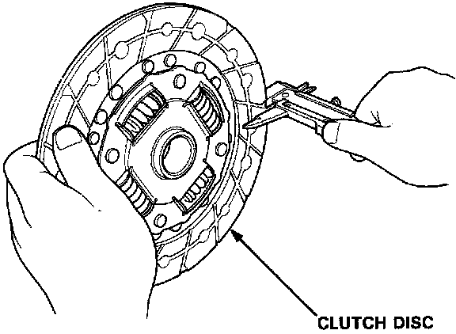
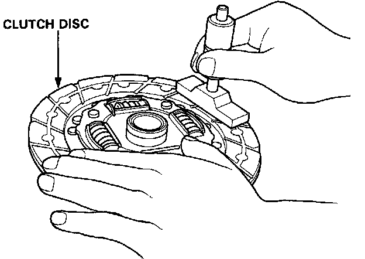

Clutch Disc: Testing and Inspection
1ST AND 2ND CLUTCH DISCS1. Inspect the lining of the clutch disc for signs of slipping or oil. Replace it if it is burned black or oil soaked.

2. Measure the clutch disc thickness.
Standard:
1st Clutch Disc: 8.3 - 9.0 mm (0.33 - 0.35 in)
2nd Clutch Disc: 7.6 - 8.3 mm (0.30 - 0.33 in)
Service Limit:
1st Clutch Disc: 5.9 mm (0.23 in)
2nd Clutch Disc: 5.4 mm (0.21 in)
If the thickness is less than the service limit, replace the clutch disc.

3. Measure the depth from the lining surface to the rivets, on both sides.
1st and 2nd Clutch Discs:
Standard: 1.1 mm (0.04 in) min.
Service Limit: 0.2 mm (0.01 in)
If the rivet depth is less than the service limit, replace the clutch disc.